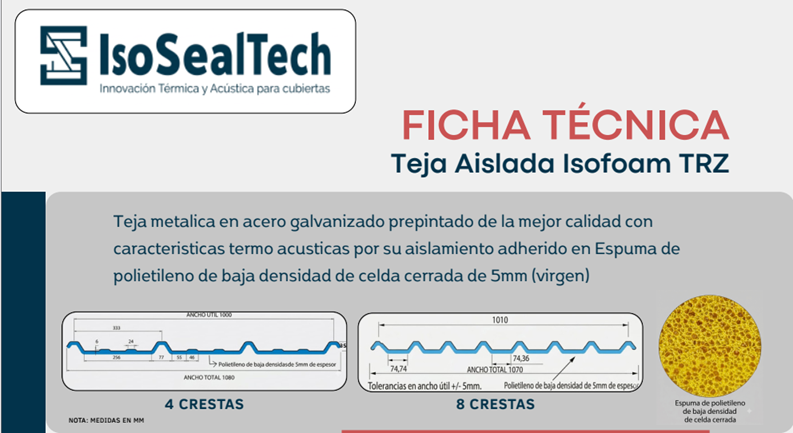

📄 Ficha Técnica IsoFoam (5mm - 10mm - 20mm)

🔍 Vista previa IsoFoam (5mm - 10mm - 20mm)
📄 Ficha técnica placa en espuma de polietileno (40mm - 50mm)

🔍 Vista previa Placa Espuma de Polietileno (40mm - 50mm)
📄 Ficha Técnica Teja Panel Termoacústica Isopanel

🔍 Vista previa Isopanel
📄 Ficha Técnica Trapezoidal IsoFoam TRZ
🔍 Vista previa Ficha TRZ
